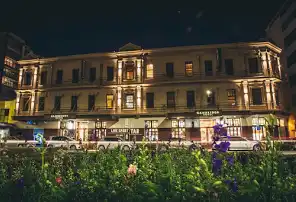

Wellington
Wellington es la capital de Nueva Zelanda. Está localizada al sur de la isla Norte, en la que Wellington es la ciudad principal. Con 212 100 habitantes en 2019, es la tercera ciudad más poblada del país, después de Auckland y Christchurch.
Como muchas otras grandes ciudades y capitales, la ciudad se extiende más allá de los límites de su término municipal, y su área metropolitana o Gran Wellington incluye las poblaciones y áreas rurales cercanas, la costa de Kapiti y los montes Rimutaka hasta la región de Wairarapa. El área urbana incluye cuatro ciudades: Wellington, entre el estrecho de Cook y el puerto de Wellington, abarca la mitad de la población de todas las áreas y por lo tanto es su centro económico; al norte se encuentra Porirua, se caracteriza por su gran afluencia de maoríes y procedentes de las islas del pacífico; Lower Hutt y Upper Hutt al noreste, situadas junto al valle de Hutt.
Fue fundada a finales de 1830 y se convirtió en la capital de Nueva Zelanda en 1865.
La superficie total es de 290 km².
Clima
Wellington tiene un clima oceánico templado y húmedo durante todo el año. Los inviernos son largos, pero con pocos días realmente fríos (la temperatura en julio es de 10 a 12 °C), mientras que los veranos son cortos y suaves (las temperaturas en enero rondan los 20 a 22 °C). La nieve es poco frecuente en la ciudad, no obstante, puede nevar cada tres o cuatro inviernos.
Economia
Al ser la capital de Nueva Zelanda, el sector gubernamental ha sido durante mucho tiempo un pilar de la economía de Wellington, y como tal la economía de la ciudad ha dependido por lo general de la misma. Tradicionalmente, su ubicación central significaba que era también la localización de la sede central de diferentes sectores en particular las finanzas, la tecnología y la industria pesada. Muchas de las cuales se han reubicado en Auckland tras la desregulación económica y la privatización. En los últimos años, el turismo, arte y cultura, cine, y las tecnologías de la información y la comunicación han jugado un papel importante en la economía de Wellington.
Lugares Turisticos
Te Papa Tongarewa: el Museo Nacional de Nueva Zelanda.

El primero de nuestros lugares imprescindibles que ver en Wellington es uno de los museos más completos que podrás visitar jamás. De hecho, la visita a lo largo de sus seis plantas podrá tomarte perfectamente un día entero. ¡Su propuesta dinámica e interactiva será tan amena que ni te darás cuenta!
En él Te Papa aprenderás todo lo que necesitas saber sobre la historia y la cultura del país gracias a las distintas colecciones que expone el museo. Y por si todo ello fuera poco, la entrada es completamente gratuita.
El Jardín Botánico: un remanso de paz con vistas espectacular
Con una extensión de 25 hectáreas, el Jardín Botánico es un espacio verde ubicado en una colina desde la cual puede disfrutarse de unas fantásticas vistas de la ciudad, por lo que se convierte en uno de los lugares imprescindibles que ver en Wellington.
Durante el recorrido, podrás deleitarte con sus flores y plantas provenientes de todos los rincones del planeta, así como con espacios verdaderamente interesantes, tales como un invernadero de estilo victoriano, una gran rosaleda o un cementerio con mucha historia.
Monte Victoria: una de las mejores vistas que ver en Nueva Zelanda.
La ubicación y los 196 metros de altura del Monte Victoria le convierten sin duda en uno de los mejores miradores que ver en Wellington, desde el que podrás gozar de unas espectaculares vistas de la ciudad en 360 grados
Tienes la opción de subir al Monte Victoria andando (en aproximadamente 35 minutos) o en coche (haciendo un recorrido de 10 minutos repleto de curvas). De un modo u otro, te aseguramos que una gran recompensa te estará esperando a la cima, especialmente si coincide con las mágicas luces del atardecer.
Hoteles
InterContinental Wellington
Hotel de 5 estrellas.
Este exclusivo hotel, en un edificio moderno de cristal, se encuentra a 3 minutos a pie de las tiendas de Lambton Quay y a 5 minutos a pie del Queen’s Wharf, en el paseo marítimo del puerto Wellington.
El precio por día es de 7000 UYU.
Numero de contacto: +64 4-472 2722.
Lodge In The City
Hotel 2 estrellas.
Este albergue informal está situado frente a una parada de autobús, a 12 minutos a pie del Museo de Nueva Zelanda Te Papa Tongarewa y a 8 minutos a pie del National War Memorial.
El precio por dia es de 902 UYU.
Numero de contacto: +64 4-385 8560.
The Cambridge Hotel
Hotel 3 estrellas.
Este hotel tranquilo que data de 1883 se encuentra a 8 minutos a pie de las exhibiciones históricas del Museo de Nueva Zelanda Te Papa Tongarewa, a 2 minutos a pie de las películas en el Teatro Embassy y a 2 km de la terminal de ferry de Queens Wharf.
El precio por día es de 1730 UYU.
El número de contacto: +64 4-974 2229.